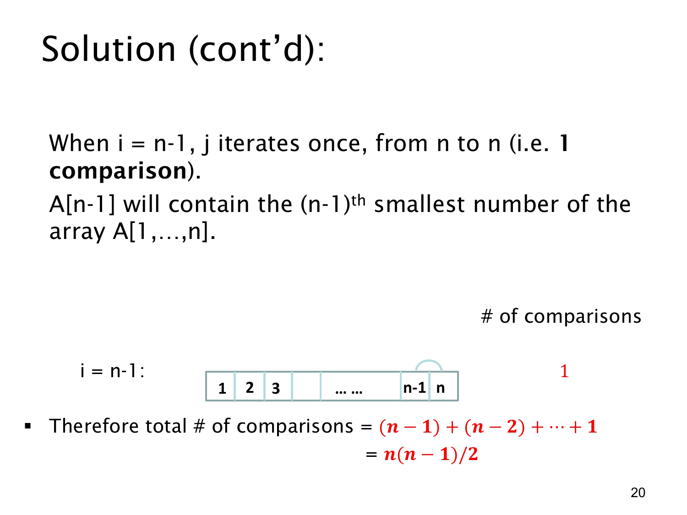

课件第 20 页讲解原文
查看这一页课件

最后一轮与总比较次数
当外层变量到达 i=n−1，只剩下最后两个位置需要确定顺序。内层变量 j 从 n 到 n，所以恰好执行一次，不是零次。
比较 A[n−1] 和 A[n]，必要时交换，便让较小的值在倒数第二个位置，较大的值在最后。前面的 n−2 个位置已经排好，因此整段排序完成。
各轮比较次数依次为：
n−1,n−2,…,2,1.
这些轮次的执行互不重叠，所以用加法法则求总数：
T=(n−1)+(n−2)+⋯+1.
把同一个和倒过来写，与原式逐项相加，每一列都等于 n，而这样的列有 n−1 个，因此 2T=n(n−1)，得到：
T=2n(n−1).
例如 5 个元素需要 4+3+2+1=10 次元素比较。也可从位置对来看：每次比较对应一个 1≤i<j≤n 的位置对，而这样的对有 (2n)=n(n−1)/2 个。
这个数量描述的是给定伪代码第 (3) 行的比较次数，不包含循环边界判断，也不是交换总次数。它解释了该算法为何具有二次规模的比较工作量：当输入长度很大时，主导项是 n2/2。